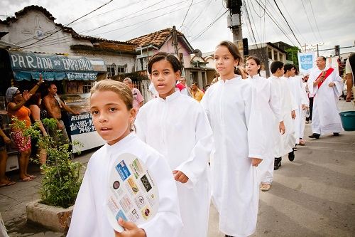

Main Events
Christmas, Carnival and so much more! Check out the numerous festivals that Rio de Janeiro has to offer throughout the year.The city is host to a wonderful set of local festivals. It is best to check what events are on before you arrive in Rio de Janeiro so that you can see as much as you can in your time there.
Carnival in Rio

One of the best times is when Carnival in Rio starts, the first of the big events in Rio. It is a once in a lifetime experience, that gives you the opportunity to dive into the heart of the Brazilian culture. From the big parade and competition between Rio’s samba schools till numerous and endless street parties. The world’s biggest party goes on for almost a week and attracts people from all over the world. It starts on Friday before Ash Wednesday (51 days to Easter and ends on Ash Wednesday noon (46 days before Easter)
Christmass in Rio
Rio partakes in Christmas (25th December) festivities the traditional Christian way by decorating Christmas trees with various embellishments. Sometimes instead of a conventional pine tree, tropical trees are used for decorations. Prayers are held in churches on Christmas Eve and celebrations, and fireworks are on full swing till the advent of New Year. Along with the song, dance and music, many visitors land up at the Rodrigo de Freitas lagoon to view the world’s tallest floating Bradesco Seguros Christmas Tree.
New Year’s Celebrations
Rio de Janeiro is one of the best and most popular places in the world to celebrate New Years. Millions of people flock to the Marvelous City to reminisce the year that has been and celebrate the new year that has arrived. New Year’s Eve in Rio de Janeiro is one big orgasm of happiness, where there is no difference between skin colour, social status or age. Everybody is just celebrating life, a thing Brazilians know to do pretty well and pretty intense. Hotels, houses, restaurants, and the whole city is lit up with decorations. Various shows, concerts and other entertaining events are organized to celebrate the forthcoming year (and the end of the previous one). Ringing in the New Year with a midnight Champagne toast is considered to be lucky, so get involved!
Brazil’s Independence Day
Brazil’s Independence Day which falls on September 7, is a public holiday for all nationals. Rio natives celebrate their independence with a lot of excitement and joy. Thousands of people come out on the streets to celebrate their freedom from Portugal. Various kinds of embellishments such as balloons, streamers and banners decorate every nook and corner of the city. There are parades in schools, and the Brazilian flag is hoisted in all public and government organizations with great pride. In the evening there are fireworks displays in the city square, which is worth watching.
Day of St. Sebastian Celebrations
The city of Rio celebrates the Day of St. Sebastian on 20th January every year. To celebrate the day of its patron, St. Sebastian, festive processions are organised. The parade passes through the lanes of Tijuca, the Centre and the Glory. Rio has a public holiday on the day of the celebration, and over a hundred agents are appointed to control the city crowds. This festival is celebrated in honour of St. Sebastian, who became a martyr due to his faith in Christianity.
